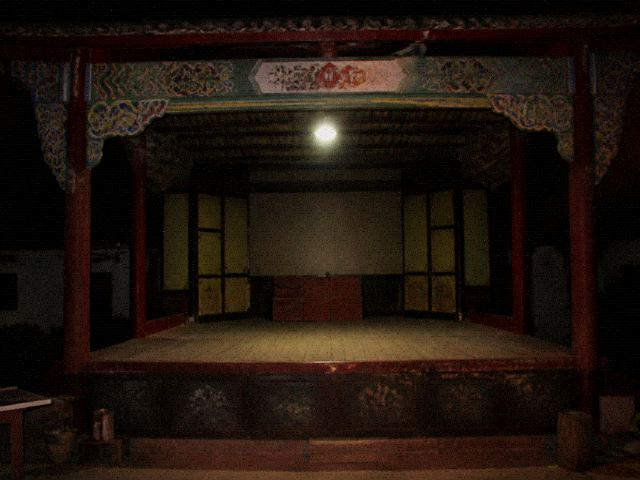

桐县文化馆抄件 无机关徽标

抄件。八月二十一日夜。正额一炷。加记一炷，备注 0834。0834 是手机号后四位。
加记不是功德。加记是夜戏齐人时跟剧团对过的。对过的人不在庙里。
马句那年的加记后四位已经涂了一次，又被人描回来。描回来的人不是乔干。
要划掉今晚这炷，得剧团三本账一起到。只拿香火账不够。只拿订单也不够。
白戏日不写加记。白戏日账是干净的。干净两个字在这儿只表示没有后四位。
槐溪文献
香火账抄写附记。乔干。八月二十一日夜那一页，正额一炷，加记一炷。加记备注 0834。0834 是手机号后四位。后四位不是名。
加记不是功德。加记是夜戏齐人时跟剧团对过的。对过的人不在庙里。马句那年的加记后四位已经涂了一次，又被人描回来。描回来的人不是乔干。描的笔迹比账上原字细，细的那种圆珠笔，馆里没有这种笔。要划掉今晚这炷，得剧团三本账一起到。只拿香火账不够。只拿订单也不够。白戏日不写加记。白戏日账是干净的。干净两个字在这儿只表示没有后四位。抄件每周一抄，有人预约才抄。预约电话走文化馆。五点下班。下班后不现场翻簿。簿在庙西房，西房跟剧团西厢不是一间房，别走错。走错了剧团门房不给翻香火。香按斤，这页不记斤，斤在进货条。进货条不外借。今晚这炷如果有人来划，划的时候要在备注栏写「据剧团三本」，不写据剧团三本，乔干不划。不划就还在。还在的后四位继续跟戏单边注对。对得上不是乔干的事。乔干只管这一炷写没写错。周一没人预约就不翻簿。簿在西房，钥匙在乔干口袋里，口袋五点出馆。出馆了今晚不对账。隔天来要重新预约。别走剧团电话，剧团不接香火。打文化馆总机。分机纸条洇了就按门上还能认的那四个数字打。排不上就等下周一。等的时候 0834 不淡。不淡就还是加记。